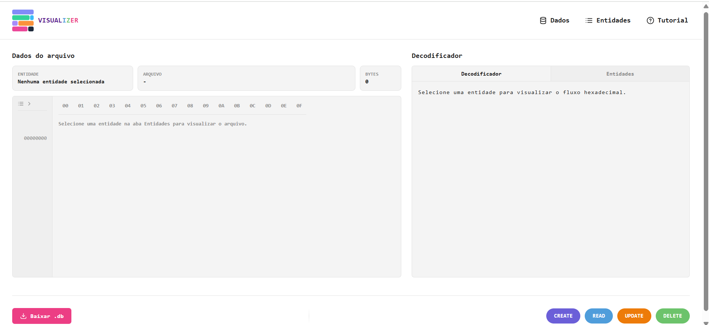
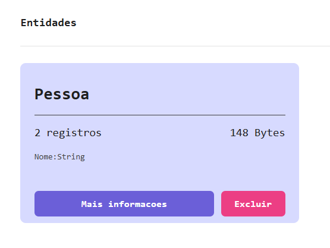
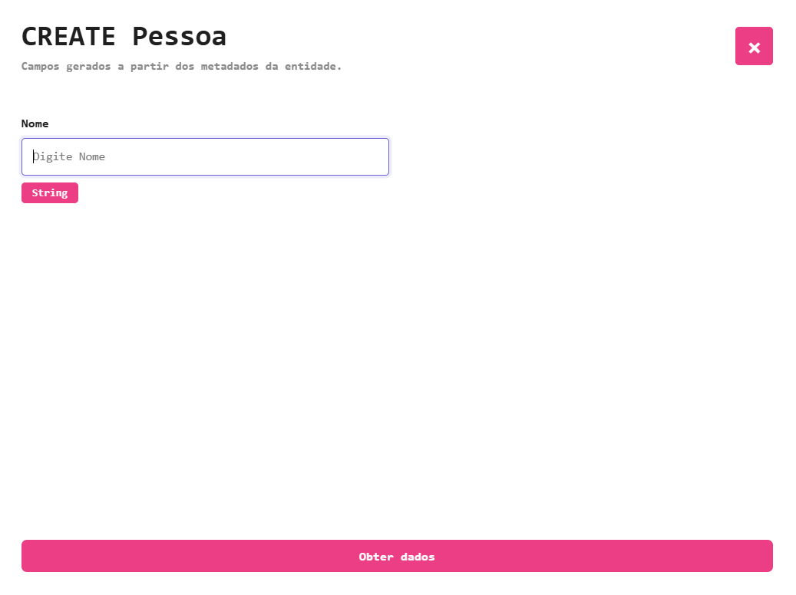
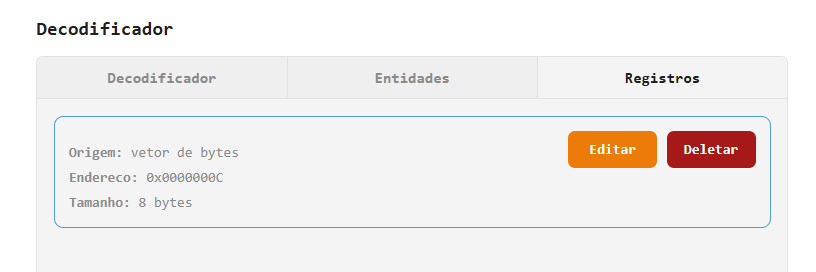
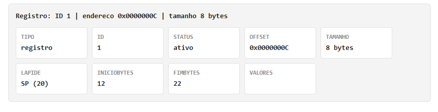
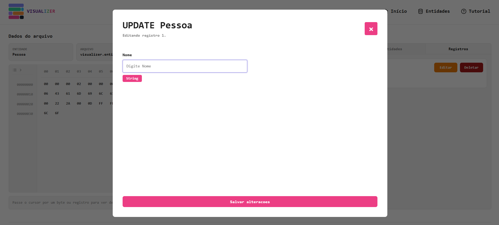
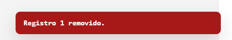

Guia do Visualizer
O Visualizer é uma ferramenta educacional para visualizar como informações são armazenadas em arquivos de dados, permitindo acompanhar operações CRUD e a organização interna dos registros.

CRIADORES
O que é o Visualizer?
O sistema foi desenvolvido para demonstrar de forma visual o funcionamento de arquivos de dados utilizados em bancos de dados, na disciplina de Algoritmos e Estruturas de Dados 3, com o professor Marcos André Silveira Kutova.
Cada entidade criada gera um arquivo próprio e os registros inseridos podem ser acompanhados através da visualização hexadecimal e do decodificador.

Tela de Entidades
Nesta tela são definidas as entidades e seus atributos. Aqui, você pode:
- Criar entidades
- Adicionar atributos
- Definir tipos de dados
- Gerenciar estruturas de armazenamento

CREATE
O CREATE adiciona um novo registro ao arquivo da entidade.
- O formulário coleta os valores.
- Os dados são convertidos para bytes.
- Um ID é gerado automaticamente.
- O registro é armazenado no arquivo.
- O visualizador é atualizado.
Você pode acessar o CREATE através do botão no canto direito inferior da tela de início!
READ
Ao selecionar uma entidade criada e clicar em "Registros", é possível ver todos os registros feitos daquela entidade. Clicando em algum deles, também é possível visualizar seus bytes destacados e algumas informações sobre, como o caractere ASCII, seu ID e sua lápide



UPDATE & DELETE
Tanto o update quanto o delete podem ser feitos na página inicial, selecionando uma entidade e clicando em "Registros"
O UPDATE atualiza registros existentes, preservando a estrutura do arquivo conforme as regras definidas. Já o DELETE, remove logicamente um registro através da utilização da lápide, permitindo reutilização futura do espaço.

DÚVIDAS?
Caso tenha restado alguma dúvida, entre em contato com os criadores através do LinkedIn ou acesse o vídeo abaixo para entender melhor como utilizar a ferramenta!